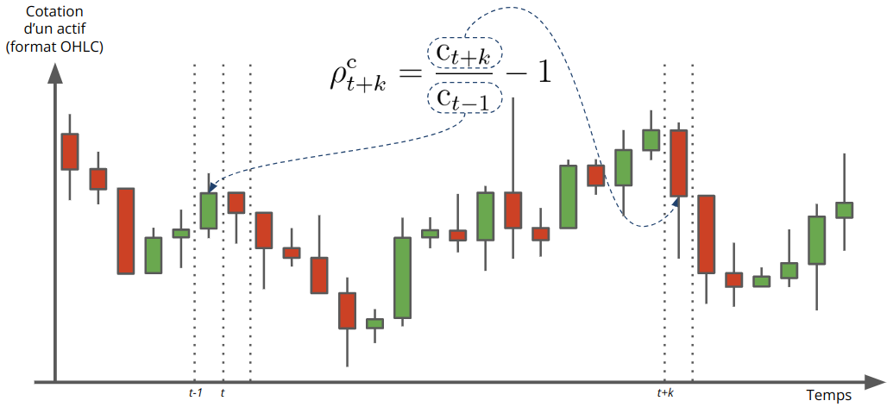

Basic notions
Table des matières
1. Introduction
In the field of financial market analysis, technical analysis refers to a set of tools aimed at predicting the future returns of financial assets. These analyses rely on studying the historical market data available, primarily the price and volume of the considered assets.
The majority of the presented methodologies rely on the construction of specific indicators deemed relevant by their authors. However, the evaluation of these indicators is typically based on empirical backtesting on arbitrarily chosen and relatively short periods, especially in the case of intraday analysis. Like the authors of the article farias_nazario_literature_2017, we agree that assessing the performance of technical analysis requires mathematical consolidation. To address this, we propose to develop an innovative strategy for evaluating technical indicators based on the analysis of the conditional distribution of returns relative to observed indicators.
This document aims to present our approach to the development and evaluation of technical indicators for the technical analysis of crypto-assets.
2. Historical OHLCV Data
The evolution of an asset's price over time is commonly presented in the form of data known as OHLCV (Open, High, Low, Close, Volume). This format allows for the representation of time series data in a specific way. The OHLC format represents the evolution of a measurement over successive regular time intervals, characterized by a sampling period denoted as \(\Delta t\) (e.g., one minute, five minutes, one hour, one day, etc).
Typically, OHLCV data contains the following variables:
timestamp: a timestamp indicating the start \(t\) of the measurement interval (e.g., expressed in milliseconds or in ISO format). The end of the interval is equal to \(t + \Delta t\).open: the asset's value at the beginning of the interval.high: the maximum value of the asset reached during the interval.low: the minimum value of the asset reached during the interval.close: the asset's value at the end of the interval.volume: the cumulative amount of asset sales and purchases during the interval.
OHLC data is commonly visualized using candlestick charts. Based on the opening and closing values, candlesticks are classified as bullish or bearish, as shown in Figure 1.

Figure 1 : Représentation du symbole de chandelier.
In a candlestick chart, the OHLC data is accompanied by the concepts of:
- Body: representing the distance between the opening and closing prices of the asset over a time interval.
- Upper shadow: representing the distance between the top of the body and the highest price over a time interval.
- Lower shadow: representing the distance between the bottom of the body and the lowest price over a time interval.
The following table provides an overview of the initial BTC price data relative to USDC in the year 2021, with a sampling period of \(\Delta t = 5\) minutes.
For example, the first row of the table indicates that on 01/01/2021:
- At 01:00:00, the price of one BTC was 28964.54 USDC.
- Between 01:00:00 and 01:05:00, the price of one BTC was between 29018.17 USDC (closing of the current interval) and 28993.74 USDC (opening of the next interval).
- Between 00:00:00 and 00:05:00, the price of one BTC reached a minimum of 28958.66 USDC and a maximum of 29064.55 USDC.
Since the BTC/USDC market is open 24/7, we should expect \(\text{close}(t-1)\) to be equal to \(\text{open}(t)\) for all \(t\). However, due to the delay in data collection, it is common to observe slight differences between the opening price of the current time interval and the closing price of the previous interval.
3. Notations mathématiques
3.1. Notions temporelles
Nous avons introduit précédemment la période d'échantillonnage des données \(\Delta t\). On note également \(t_{0}\) la première date d'échantillonnage. Dans l'exemple de données précédent, on rappelle que \(\Delta t = 5\) minutes et que \(t_{0} =\) 2021-01-01 01:00:00.
Chaque intervalle de temps est alors repéré par l'instant qui marque le début de l'intervalle. L'intervalle \(t\) désigne donc l'intervalle de temps qui commence à l'instant \(t\) et se termine à l'instant \(t + \Delta t\) (cf. Figure 2).
Afin de se repérer relativement à un intervalle \(t\) donné dans le cas d'un échantillonnage de période \(Delta t\), on désigne par intervalle \(t + k\), où $k est un entier relatif, l'intervalle débutant à l'instant \(t + k \Delta t\) et s'achevant à l'instant \(t + (k + 1) \Delta t\)
En reprenant l'exemple précédent, on a :
- l'intervalle \(t_{0}\) entre 2021-01-01 01:00:00 et 2021-01-01 01:05:00 ;
- l'intervalle \(t_{0} + 4\) entre 2021-01-01 01:20:00 et 2021-01-01 01:25:00.
Figure 2 : Notion d'intervalle sur les données OHLCV.
Les données OHLCV sont notées dans la suite comme suit :
- \(\text{o}_{t}\) : cotation de l'actif à l'ouverture de l'intervalle \(t\) ;
- \(\text{c}_{t}\) : cotation de l'actif à la fermeture de l'intervalle \(t\), autrement dit cotation de l'actif à l'instant \(t + \Delta t\) ;
- \(\text{h}_{t}\) : cotation maximum de l'actif sur l'intervalle \(t\) ;
- \(\text{l}_{t}\) : cotation mimimum de l'actif sur l'intervalle \(t\) ;
- \(\text{v}_{t}\) : volume échangé de l'actif sut l'intervalle \(t\).
3.2. Chandelier
En plus des notations précédentes, nous pouvons introduire différentes grandeurs associées aux parties du diagramme en chandelier.
En considérant, le chandelier représentant une donnée OHLC sur l'intervalle \(t\), nous avons :
- Le corps \(\text{b}_{t} = \text{c}_{t} - \text{o}_{t}\).
- L'ombre inférieure \(\text{s}_{t}^{\ell} = \min\{\text{c}_{t}, \text{o}_{t}\} - \text{l}_{t}\).
- L'ombre supérieure \(\text{s}_{t}^{u} = \text{h}_{t} - \max\{\text{c}_{t}, \text{o}_{t}\}\).
3.3. Rendements
On note enfin \(r_{t}\) la variation relative de la cotation d'un actif entre deux intervalles consécutif, on parle également de rendement (ou returns en anglais) sur l'intervalle \(t\). Nous avons donc pour tout \(t\) :
\begin{equation} \label{org8d767de} r_{t} = \frac{\text{c}_{t}}{\text{c}_{t - 1}} - 1. \end{equation}La quantité \(r_{t}\) est donc positive si l'actif gagne de la valeur sur l'intervalle \(t\) et négative sinon. Le rendement représente l'indicateur principal au coeur de toutes les analyses financières réalisées sur un actif donnée.
4. Extension de la notion de rendements
4.1. Définitions
Le calcul des rendements est une étape fondamentale dans l'analyse d'un actif au cours du temps. La définition d'un rendement proposée dans la section précédente se limite au rendement sur le cours de clôture et uniquement entre deux intervalles de temps successifs.
En effet, nous allons étendre la définition des rendements :
- d'une part, aux cotations maximum et minimum ;
- et d'autre part, entre deux intervalles de temps \(t\) et \(t + k\) donnés.
Dans les paragraphes suivants, nous illustrerons les différentes rendements sur l'extrait de cotation BTC/USDC suivant.
4.2. Rendement de clôture
Commençons donc par définir le rendement de clôture entre deux intervalles \(t\) et \(t+k\) (cf. Figure 3) comme suit :
\begin{equation} \rho^{\text{c}}_{t + k} = \begin{cases} \frac{\text{c}_{t + k}}{\text{c}_{t-1}} - 1 & \quad k \ge 0 \\ \frac{\text{c}_{t }}{\text{c}_{t + k - 1}} - 1 & \quad k < 0. \end{cases} \end{equation}À noter que \(k\) est un nombre entier permettant de définir le nombre d'intervalles futurs ou passés à prendre en compte pour le calcul du rendement.

Figure 3 : Illustration graphique du calcul d'un rendement de clôture.
Exemples
Rendements de clôture calculés sur les données de l'exemple précédent et sur différents horizons :
En prenant l'instant \(t\) = 2021-01-01T00:05:00 et un horizon \(k = 0\), le rendement de clôture \(\rho^{\text{c}}_{t} = r_{t}\) correspond au rapport entre la clôture de l'intervalle débutant à la date 2021-01-01T01:05:00 et la clôture de l'intervalle précédent (2021-01-01T01:00:00), soit : \[ \rho^{\text{c}}_{t} = \frac{\text{c}_{t}}{\text{c}_{t-1}} = \frac{28914.30}{29018.17} - 1 \simeq -0.003579 \simeq -0.358 \% \]
En prenant l'intervalle à \(t\) = 2021-01-01T00:10:00 et un horizon \(k = 2\), le rendement de clôture \(\rho^{\text{c}}_{t+2}\) correspond au rapport entre la clôture de l'intervalle 2021-01-01T01:20:00 et la clôture de l'intervalle 2021-01-01T01:05:00, soit : \[ \rho^{\text{c}}_{t + 2} = \frac{\text{c}_{t+2}}{\text{c}_{t-1}} = \frac{28885.73}{28914.30} - 1 \simeq -0.000988 \simeq -0.099 \% \]
En prenant l'intervalle \(t\) = 2021-01-01T01:20:00 et un horizon \(k = -3\), le rendement de clôture \(\rho^{\text{c}}_{t-3}\) correspond au rapport entre la clôture de l'intervalle 2021-01-01T01:20:00 et la clôture de l'intervalle 2021-01-01T01:00:00, soit : \[ \rho^{\text{c}}_{t - 3} = \frac{\text{c}_{t}}{\text{c}_{t-4}} = \frac{28885.73}{29018.17} - 1 \simeq -0.00456 \simeq -0.456 \% \]
Propriété
Le rendement de clôture entre les intervalles \(t\) et \(t + k\), noté \(\rho^{\text{c}}_{t + k}\), s'exprime en fonction des rendements \(r_{t}, \ldots, r_{t+k}\) (cf. Équation \eqref{org8d767de}) comme suit :
\begin{equation} \rho^{\text{c}}_{t + k} = \prod_{i = 1}^{k} (r_{t + i} + 1) - 1 \end{equation}Ce résultat classique s'obtient en remarquant que :
\begin{align} \rho^{\text{c}}_{t + k} + 1 & = \frac{\text{c}_{t + k}}{\text{c}_{t-1}} \\ & = \frac{\text{c}_{t}}{\text{c}_{t - 1}} \frac{\text{c}_{t + 1}}{\text{c}_{t}} \ldots \frac{\text{c}_{t + k}}{\text{c}_{t + k - 1}} \\ & = (r_{t} + 1) (r_{t+1} + 1) \ldots (r_{t+k} + 1) \end{align}4.3. Rendement du maximum et du minimum
Le rendement du maximum entre deux intervalles \(t\) et \(t+k\) (cf. Figure 4) est défini par :
\begin{equation} \rho^{\text{h}}_{t + k} = \begin{cases} \frac{\max_{t \le i \le t + k}\text{h}_{i}}{\text{c}_{t-1}} - 1 & \quad k \ge 0 \\ \frac{\max_{t - k \le i \le t}\text{h}_{i}}{\text{c}_{t + k - 1}} - 1 & \quad k < 0. \end{cases} \end{equation}
Figure 4 : Illustration graphique du calcul d'un rendement du maximum.
Et par analogie, on définit le rendement du minimum entre deux intervalles \(t\) et \(t+k\) (cf. Figure 5) :
\begin{equation} \rho^{\text{l}}_{t + k} = \begin{cases} \frac{\min_{t \le i \le t + k}\text{h}_{i}}{\text{c}_{t-1}} - 1 & \quad k \ge 0 \\ \frac{\min_{t - k \le i \le t}\text{h}_{i}}{\text{c}_{t + k - 1}} - 1 & \quad k < 0. \end{cases} \end{equation}
Figure 5 : Illustration graphique du calcul d'un rendement du minimum.
Exemples
Rendements du maximum calculés sur les données de l'exemple précédent et sur différents horizons :
Rendements du minimum calculés sur les mêmes horizons :
En prenant l'intervalle \(t\) = 2021-01-01T01:05:00 et un horizon \(k = 0\), le rendement du maximum \(\rho^{\text{h}}_{t} = r_{t}\) correspond au rapport entre la cotation maximum de l'intervalle 2021-01-01T01:05:00 et la clôture de l'intervalle 2021-01-01T01:00:00, soit : \[ \rho^{\text{h}}_{t} = \frac{\text{h}_{t}}{\text{c}_{t-1}} = \frac{28996.04}{29018.17} - 1 \simeq -0.000762 \simeq -0.076 \% \]
Le rendement du minimum correspondant est : \[ \rho^{\text{l}}_{t} = \frac{\text{l}_{t}}{\text{c}_{t-1}} = \frac{28890.99}{29018.17} - 1 \simeq -0.00438 \simeq -0.44 \% \]
En prenant l'intervalle \(t\) = 2021-01-01T01:10:00 et un horizon \(k = 2\), le rendement du maximum \(\rho^{\text{h}}_{t+2}\) correspond au rapport entre la cotation maximum entre les intervalle 2021-01-01T01:10:00 et 2021-01-01T01:20:00, et la clôture de l'intervalle 2021-01-01T01:05:00, soit : \[ \rho^{\text{h}}_{t + 2} = \frac{\max\{\text{h}_{t}, \text{h}_{t+1}, \text{h}_{t+2}\}}{\text{c}_{t-1}} = \frac{\text{h}_{t}}{\text{c}_{t-1}} = \frac{28908.49}{28914.30} - 1 \simeq -0.000201 \simeq -0.02 \% \]
Le rendement du minimum correspondant est : \[ \rho^{\text{l}}_{t + 2} = \frac{\max\{\text{l}_{t}, \text{l}_{t+1}, \text{l}_{t+2}\}}{\text{c}_{t-1}} = \frac{\text{l}_{t}}{\text{c}_{t-1}} = \frac{28741.86}{28914.30} - 1 \simeq -0.00596 \simeq -0.59 \% \]
En prenant l'intervalle \(t\) = 2021-01-01T01:20:00 et un horizon \(k = -3\), le rendement du maximum \(\rho^{\text{h}}_{t-3}\) correspond au rapport entre la cotation maximum entre les intervalles 2021-01-01T01:05:00 et 2021-01-01T01:20:00, et la clôture de l'intervalle 2021-01-01T01:00:00, soit : \[ \rho^{\text{h}}_{t - 3} = \frac{\max\{\text{h}_{t-3}, \text{h}_{t-2}, \text{h}_{t-1}, \text{h}_{t}\}}{\text{c}_{t-4}} = \frac{\text{h}_{t-3}}{\text{c}_{t-4}} = \frac{28996.04}{29018.17} - 1 \simeq -0.000762 \simeq -0.076 \% \]
Le rendement du minimum correspondant est : \[ \rho^{\text{l}}_{t - 3} = \frac{\max\{\text{l}_{t-3}, \text{l}_{t-2}, \text{l}_{t-1}, \text{l}_{t}\}}{\text{c}_{t-4}} = \frac{\text{l}_{t-2}}{\text{c}_{t-4}} = \frac{28741.86}{29018.17} - 1 \simeq -0.00952 \simeq -0.95 \% \]
5. Environnement technique
Les librairies Python utilisées dans les traitements présentés dans ce document sont :
| Library | Version |
|---|---|
| MOSAIC | 0.0.40 |